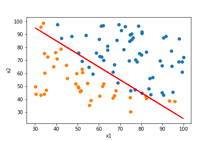

Introduction to Logistic Regression
The logistic regression is used to make classicfication. In this post, we will be investigating the two-level case meaning that we will have only two possible outputs: 0 or 1. For a discrete set of target we have $$y \in \{0,1\}$$ In real life examples, this could mean many things. For example: having the size of the tumors as a feature, we may decide if the tumor is benign or not. Then our target is two-level: benign, or not.
We want the hypothesis to be in the interval, $$ 0 \leq h(x) \leq 1$$ The following convention, although it is not used commonly as a first choice today, is the definition of an hypothesis, as a sigmoid function. $$ h(x) = \sigma(\theta^T x), \sigma(x) = \frac{1}{1+e^{-x}}$$ In this formalism, we will have the hypothesis function interpreted as the estimated probability that y=1 on feature x. $$h(x) = P(y=1|x;\theta)$$
Decision Boundary
According to the above definition, we will predict y=1 whenever $$h(x)\geq 0.5$$ But substituting for sigmoid function in the hypothesis, we then get $$ y=1 \rightarrow \theta^T x \geq 0$$ Similarly, $$ y=0 \rightarrow \theta^T x \leq 0$$ Note that at zero we don't have a prediction. Then by finding these relations, we can plot the decision boundary. It can be a line, or a non-linear shape. For instance for a polynomial set of features, we will get a polynomial inequality relation therefore a non-linear decision boundary such as an elipse or a circle.
Cost Function
The training set will be $$T = \{(x^{(1)},y^{(1)}),\dots, (x^{(m)},y^{(m)})\}$$ The size of the training set is m. We similarly define $$x = \begin{bmatrix} 1 \\ x_1 \\ x_2 \\ \dots \\ x_n \end{bmatrix}, \theta = \begin{bmatrix} \theta_0 \\ \theta_1 \\ \theta_2 \\ \dots \\ \theta_n \end{bmatrix}, y=\{0,1\}$$ and we also have $$ h(x) = \sigma(\theta^T x)$$ Now we will use the conventional cost function, note that there may be found other suitable cost functions. We will have $$ J(\theta) = \frac{1}{m} \sum_{i=1}^{m} error(h(x^{(i)}),y^{(i)})$$ with the error function $$ error(h(x),y) = $$ $$ -yln(h(x))-(1-y)ln(1-h(x))$$ Notice that this is in fact the entropy of a discrete two-level system found by using the micro-canonical partition function in statistical physics.
The same procedure of gradient descent algorithm will be used here. Yet as it is a little too tedious to take the derivative, instead of confusing the reader, I will give the derivative: $$ \theta_j := $$ $$ \theta_j - \frac{\alpha}{m}\sum_{i=1}^{m}(h(x^{(i)})-y^{(i)})x_j^{(i)}$$ and we repeat this until convergence. Note that as it may seem exactly similar to the gradient descent procedure of multi-feature linear regression, it is not the same at all as the hypothesis function is different. Moreover, the vectorized version of this algorithm will be. $$ \theta := \theta - \frac{\alpha}{m}X^T(\sigma(X\theta)-y)$$ When we apply this, we will find for this data, the following decision boundary. The decision boundary, will be crucial to predict in which side our new predictions are going to be.
Remark
If we have a problem of overfitting, we can reduce the number of features or we can use regularization, which is the next topic.